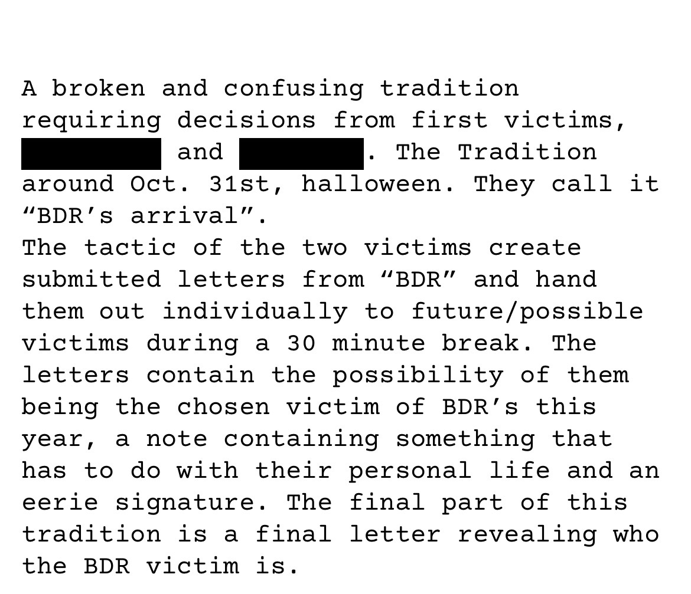
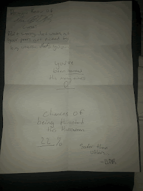

Proof of connections between BDR and R.H.

Orignal Statement

Here is the last evidence we have that was sent to a victim that we currently cannot identify.
Shown in this photo, is one of main examples of the BDR tradition, designated to a victim named, “Sophia”